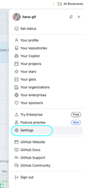
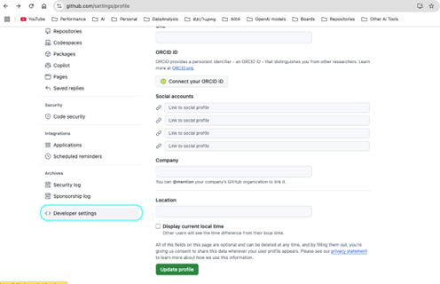
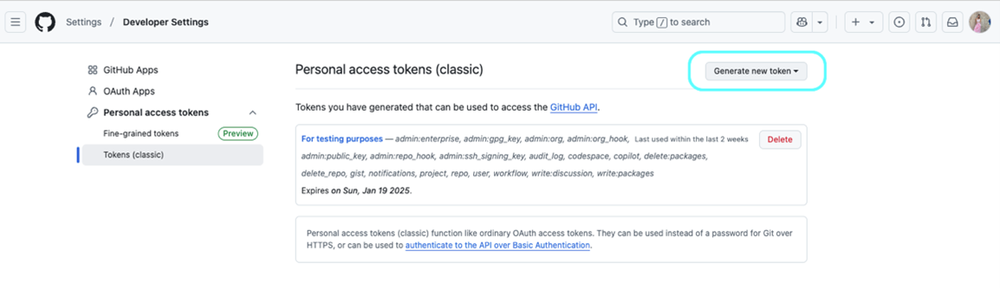
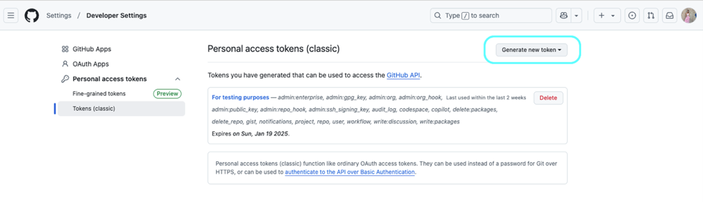
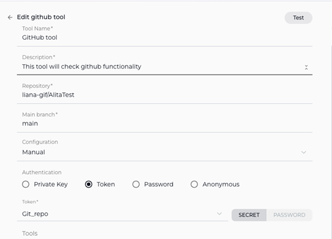

ELITEA Toolkit Guide: GitHub Integration
Introduction
Purpose of this Guide
This guide is your definitive resource for integrating and utilizing the GitHub toolkit within ELITEA. It provides a comprehensive, step-by-step walkthrough, from generating a GitHub Personal Access Token to configuring the toolkit in ELITEA and effectively using it within your Agents. By following this guide, you will unlock the power of automated code management, streamlined development workflows, and enhanced team collaboration, all directly within the ELITEA platform. This integration empowers you to leverage AI-driven automation to optimize your software development lifecycle using the combined strengths of ELITEA and GitHub.
Brief Overview of GitHub
GitHub is the world's leading web-based platform for version control, collaboration, and software development. It is built around Git and provides a rich ecosystem for developers to host, manage, and collaborate on code. GitHub is essential for modern software development, offering features for:
- Robust Version Control: Leveraging Git, GitHub meticulously tracks every change to your code, enabling seamless collaboration, easy rollback to previous states, and a complete history of project evolution.
- Streamlined Code Collaboration: Facilitate effective teamwork with features like pull requests for code review, in-line commenting, and branch-based development workflows, fostering a collaborative coding environment.
- Centralized Code Hosting: Provides a secure, reliable, and globally accessible platform for hosting and managing your Git repositories, ensuring code availability and integrity.
- Powerful Workflow Automation (GitHub Actions): Enables you to automate your software development lifecycle with GitHub Actions, including building, testing, and deploying code directly from your repositories.
- Issue Tracking and Project Management: Integrated issue tracking and project management tools help teams organize tasks, track bugs, and manage projects directly within the GitHub platform.
Integrating GitHub with ELITEA brings these powerful development capabilities directly into your AI-driven workflows. Your ELITEA Agents can then interact with your GitHub repositories to automate code-related tasks, enhance development processes, and improve team collaboration through intelligent automation, making your development workflows smarter and more efficient.
Toolkit's Account Setup and Configuration in GitHub
Account Setup
If you don't already have a GitHub account, follow these steps to create one:
- Visit GitHub Website: Open your web browser and go to github.com.
- Sign Up: Click on the "Sign up" button, located in the top right corner of the homepage.
- Enter Details: Follow the on-screen instructions to create your account. You will need to choose a username, provide your email address, and create a strong password.
- Verify Email: Check your inbox for a verification email from GitHub. Click the verification link in the email to activate your account.
- Log In: Once your email is verified, log in to GitHub using your newly created username and password.
Token/API Key Generation: Creating a Personal Access Token (Classic) in GitHub
For secure integration with ELITEA, it is essential to use a GitHub Personal Access Token (Classic). This method is significantly more secure than using your primary GitHub account password directly and allows you to precisely control the permissions granted to ELITEA.
Follow these steps to generate a Personal Access Token (Classic) in GitHub:
- Log in to GitHub: Access your GitHub account at github.com.
- Access Settings: Click on your profile avatar in the top right corner and then click on "Settings".
- Navigate to Developer Settings: In the left-hand sidebar, scroll down and click on "Developer settings".
- Access Personal Access Tokens (Classic): In the left-hand sidebar under "Personal access tokens," click on "Tokens (classic)".
- Generate New Token: Click the "Generate new token (classic)" button.
- Note: If you have previously created tokens, you might see a "Generate new token" button instead.
-
Provide Token Details:
- Note (Description): In the "Note" field, enter a descriptive label for your token, such as "ELITEA Integration" or "ELITEA Agent Access." This will help you easily identify the purpose of this token in the future.
- Expiration (Recommended): For enhanced security, it is highly recommended to set an Expiration date for your token. Choose a reasonable validity period to limit the token's lifespan. If compromised, a token with a shorter lifespan poses less risk.
-
Select Scopes - Grant Least Privilege (Crucial for Security): Carefully and deliberately select the scopes or permissions you grant to this token. It is paramount to grant only the absolute minimum necessary permissions required for your ELITEA Agent's intended interactions with GitHub. Overly permissive tokens pose a significant security risk. For typical ELITEA integration, consider these minimal scopes:
-
Minimal Scopes for Common Use Cases:
- repo (For full access to private and public repositories. If possible, select more granular
reposcopes instead of fullrepo):- repo:status (Access commit statuses)
- public_repo (Access public repositories)
- workflow (Access GitHub Actions workflows if your Agent needs to interact with workflows)
- read:user (To read user profile information, often needed for basic interactions)
- repo (For full access to private and public repositories. If possible, select more granular
-
Additional Scopes for Specific Functionality (Grant only if needed):
- issues (To access and manage issues)
- pull_request (To access and manage pull requests)
- gist (To access gists, if your Agent needs to work with gists)
- read:org (To read organization membership and information, if your Agent needs organization-level access)
-
Important Security Practices:
- Principle of Least Privilege: Strictly adhere to the principle of least privilege. Grant only the scopes that are absolutely essential for your ELITEA Agent to perform its intended tasks.
- Avoid "admin" or Broad Scopes: Never grant "admin" or overly broad permissions unless absolutely necessary and with a clear understanding of the security implications. Broad scopes significantly increase the potential security impact if the token is compromised.
- Regular Token Review and Rotation: Regularly review the tokens you have generated and their associated scopes. Rotate tokens periodically (generate new ones and revoke old ones) as a security best practice, especially for sensitive integrations.
-
Generate Token: Click the "Generate token" button at the bottom of the page.
- Securely Copy and Store the Personal Access Token: Immediately copy the generated token that is displayed on the next page. This is the only time you will be able to see and copy the full token value. Store it securely using a robust password manager or, preferably, ELITEA's built-in Secrets feature for enhanced security within the ELITEA platform. You will need this token to configure the GitHub toolkit in ELITEA.


 

GitHub Integration with ELITEA
Agent Creation/Configuration
To integrate GitHub, you'll need to configure it within an ELITEA Agent. You can integrate GitHub with a new Agent or modify an existing one.
- Navigate to Agents Menu: In ELITEA, go to the Agents menu.
- Create or Edit Agent:
- New Agent: Click "+ Agent" to create a new Agent. Follow the steps to define Agent details such as name, description, type, and instructions.
- Existing Agent: Select the Agent you wish to integrate with GitHub and click on its name to edit its configuration.
- Access Toolkits Section: Within the Agent configuration, scroll down to the "Tools" section.
Toolkit Configuration
This section details how to configure the GitHub toolkit within your ELITEA Agent.
- Add Toolkit: In the "Tools" section, click the "+" icon.
- Select GitHub Toolkit: From the dropdown list of available toolkits, choose "GitHub". This will open the "New GitHub tool" configuration section.
-
Configure GitHub Toolkit Settings: Fill in the following configuration fields in the "New GitHub tool" section:
- Name: Enter a descriptive Name for your GitHub toolkit instance. This name will be used to reference the toolkit within your Agent's instructions (e.g., "MyGitHubRepo", "CodeRepoAccess"). Choose a name that clearly indicates its purpose.
- Description: Provide a concise Description of the toolkit's purpose or the specific GitHub repository it will access (e.g., "Access to the main development code repository").
- URL: This field is pre-filled with the standard GitHub API URL:
https://api.github.com. In the vast majority of cases, you should not modify this URL. Only change it if you are connecting to a self-hosted GitHub Enterprise Server instance, in which case you should enter the specific API URL for your Enterprise Server. - Repository: Enter the Repository name that you want to access with this toolkit. Use the format:
repository_owner/repository_name(e.g.,MyOrganization/my-project-repo). Ensure you use the correct owner/organization and repository name. - Main branch: Specify the Main branch of your repository. This is typically
mainormaster. - Authentication Options - Token: Select the "Token" authentication option.
- Password/Secret: Choose "Password" and then paste the Personal Access Token (Classic) you generated in GitHub (during the "Software-Specific Setup" section of this guide) into the "Password" field.
- Enhanced Security with Secrets (Recommended): For significantly enhanced security, it is strongly recommended to use the "Secret" option. Select "Secret" and then choose a pre-configured secret from the dropdown list. You must first securely store your Personal Access Token as a Secret within ELITEA's Secrets Management feature. Using Secrets is a critical security best practice that prevents hardcoding sensitive credentials directly in the toolkit configuration, reducing the risk of exposure.

-
Enable Desired Tools: In the "Tools" section within the GitHub toolkit configuration, carefully select the checkboxes next to only the specific GitHub tools that your Agent will actually need to use. Enable only the tools that are absolutely necessary to adhere to the principle of least privilege and minimize potential security risks. Available tools include:
- Get issues - Retrieves a list of issues.
- Get issue - Retrieves details of a specific issue.
- Search issues - Searches for issues based on provided criteria.
- Create issue - Creates a new issue.
- Update issue - Updates an existing issue.
- Comment on issue - Adds a comment to an issue.
- List open pull requests (PRs) - Lists open pull requests.
- Get pull request - Retrieves details of a specific pull request.
- List pull request files - Lists files changed in a pull request.
- Create pull request - Creates a new pull request.
- Create file - Creates a new file.
- Read file - Reads the content of a file.
- Update file - Updates the content of an existing file.
- Delete file - Deletes a file.
- List files in branch - Lists files in a branch.
- List branches in repo - Lists branches in the repository.
- Set active branch - Sets the active branch.
- Create branch - Creates a new branch.
- Get files from directory - Retrieves files from a directory.
-
Complete Setup: Click the arrow icon (usually located at the top right of the toolkit configuration section) to finalize the GitHub toolkit setup and return to the main Agent configuration menu.
- Click Save in the Agent configuration to save all changes.
Tool Overview
Once the GitHub toolkit is configured and added to your Agent, you can utilize the following tools within your Agent's instructions to enable interaction with your GitHub repositories:
-
Get Issues: Tool Name:
get_issues- Functionality: Retrieves a list of issues from the specified GitHub repository. Supports filtering and sorting based on various criteria like state, labels, assignees, and creation date.
- Purpose: Enables Agents to efficiently fetch and organize issue lists for task management, prioritization of bug fixes and feature requests, generating reports on project issues, or providing users with summarized views of project issues directly within ELITEA workflows.
-
Get Issue: Tool Name:
get_issue- Functionality: Retrieves detailed information about a specific issue from a GitHub repository using its issue number. Includes comprehensive details such as issue title, description, status, labels, assignees, creation and update dates, and all associated comments and metadata.
- Purpose: Allows Agents to access in-depth issue details for providing rich context during problem-solving, summarizing the complete status of a particular issue, or incorporating comprehensive issue information into ELITEA conversations, reports, and automated workflows.
-
Search Issues: Tool Name:
search_issues- Functionality: Searches for issues across the specified GitHub repository based on a query string. Supports advanced search syntax and filters to refine search results by keywords, authors, labels, state, and more.
- Purpose: Enables Agents to perform targeted searches for issues matching specific criteria, facilitating efficient retrieval of relevant issues based on keywords, user queries, or workflow requirements. Useful for finding issues related to specific topics, bugs, or feature areas.
-
Create Issue: Tool Name:
create_issue- Functionality: Creates a new issue in the specified GitHub repository. Requires parameters such as issue title and body, and optionally supports setting assignees, labels, and milestones during issue creation.
- Purpose: Automates the process of issue creation directly from ELITEA workflows. Allows Agents to automatically log bugs, feature requests, or tasks based on user input, workflow triggers, or analysis results, streamlining issue reporting and task management.
-
Update Issue: Tool Name:
update_issue- Functionality: Updates an existing issue in the specified GitHub repository. Allows modification of issue attributes such as title, body, status (open/closed), assignees, and labels. Requires the issue number to identify the issue to be updated.
- Purpose: Enables Agents to automate issue status updates, assignment changes, priority adjustments, or content modifications based on workflow progress, user actions, or external events. Facilitates dynamic issue management and keeps issue tracking information current and accurate.
-
Comment on Issue: Tool Name:
comment_on_issue- Functionality: Adds a new comment to a specific issue in a GitHub repository. Requires the issue number and the comment text as parameters.
- Purpose: Automates communication and updates within issue tracking workflows by allowing Agents to add comments to GitHub issues directly from ELITEA. Streamlines providing status updates, asking for clarifications, notifying stakeholders, or logging automated actions related to specific issues.
-
List Open Pull Requests (PRs): Tool Name:
list_open_pull_requests- Functionality: Retrieves a list of currently open pull requests from the specified GitHub repository. Provides an overview of pending code changes and code review activities.
- Purpose: Enables Agents to fetch lists of open pull requests for code review management, generating reminders for pending reviews, creating reports on code changes in progress, or providing users with summaries of open PRs within ELITEA, improving code review workflow efficiency.
-
Get Pull Request: Tool Name:
get_pull_request- Functionality: Retrieves detailed information about a specific pull request from a GitHub repository using its pull request number. Includes details like PR title, description, status, associated commits, comments, reviewers, and merge status.
- Purpose: Allows Agents to access comprehensive pull request details for in-depth code review assistance, providing complete context on specific pull requests, facilitating informed decision-making during code merging, or incorporating detailed PR information into ELITEA workflows and reports.
-
List Pull Request Files: Tool Name:
list_pull_request_files- Functionality: Retrieves a list of files that have been changed within a specific pull request in a GitHub repository. Highlights the specific code modifications introduced by the pull request.
- Purpose: Enables Agents to provide concise summaries of files changed in a pull request, facilitate efficient code review by quickly listing modified files for reviewers, or analyze the scope and potential impact of code changes introduced by a PR within ELITEA workflows, aiding in impact assessment and review focus.
-
Create Pull Request: Tool Name:
create_pull_request- Functionality: Creates a new pull request in the specified GitHub repository. Requires parameters such as the source branch, target branch, pull request title, and body.
- Purpose: Automates the pull request creation process for code contributions, feature branches, or bug fixes directly from ELITEA. Significantly streamlines the code review and merging process, reduces manual effort for developers, and accelerates development cycles by automating the initiation of code integration.
-
Create File: Tool Name:
create_file- Functionality: Creates a new file within the specified GitHub repository at a specified path with provided content.
- Purpose: Automates the creation of new code files, documentation files, configuration files, or any other type of file within your repository directly from ELITEA workflows. Ensures consistency in file creation, reduces manual file creation tasks, and enables automated generation of project assets.
-
Read File: Tool Name:
read_file- Functionality: Reads and retrieves the content of a specific file from the specified GitHub repository, based on the file path and branch name.
- Purpose: Enables Agents to dynamically retrieve code snippets, configuration parameters, documentation content, or any file content from your repository. Provides context, data, or instructions to your ELITEA Agent or to users within ELITEA conversations, facilitating dynamic, data-driven, and context-aware workflows.
-
Update File: Tool Name:
update_file- Functionality: Updates the content of a specific, existing file within a GitHub repository. Replaces the entire file content with the provided new content.
- Purpose: Automates the process of updating code files, documentation, configuration files, or any file content within your repository based on ELITEA workflow outputs, user requests, or external triggers. Ensures configurations are synchronized, documentation is kept up-to-date, and codebase modifications are automated.
-
Delete File: Tool Name:
delete_file- Functionality: Deletes a specific file from a GitHub repository, based on the file path and branch name.
- Purpose: Automates file deletion tasks within your repository, such as removing obsolete files, cleaning up temporary files generated by ELITEA workflows, or enforcing codebase cleanup policies. Helps maintain a clean, organized, and efficient codebase by automating file lifecycle management.
-
List Files in Branch: Tool Name:
list_files_in_branch- Functionality: Retrieves a list of files present in a specific branch of a GitHub repository. Provides a flat list of file paths within the branch.
- Purpose: Allows Agents to programmatically browse repository contents, provide users with file lists for navigation and file selection within ELITEA, or analyze file structures within automated workflows, facilitating file-based operations and repository exploration.
-
List Branches in Repo: Tool Name:
list_branches_in_repo- Functionality: Retrieves a list of all branches available in the specified GitHub repository. Provides a simple list of branch names.
- Purpose: Enables Agents to get a comprehensive list of branches for branch management automation, generating reports on repository branching structure, providing users with branch selection options within ELITEA workflows, or automating branch-related decision-making processes.
-
Set Active Branch: Tool Name:
set_active_branch- Functionality: Sets a specific branch as the currently active branch within the GitHub toolkit's context. Affects subsequent file-related operations to target the specified branch.
- Purpose: Ensures that subsequent file operations (like
read_file,update_file,create_file,delete_file) performed by the Agent are directed to the correct branch. Improves workflow accuracy, prevents unintended modifications to incorrect branches, and provides branch context for file actions.
-
Create Branch: Tool Name:
create_branch- Functionality: Creates a new branch in the specified GitHub repository, branching off from a specified base branch. Requires the new branch name and the base branch name as parameters.
- Purpose: Automates the creation of new branches for feature development, bug fixes, experimental code changes, or any branching requirement directly from ELITEA. Streamlines branch management, speeds up development workflows by automating branch setup, and reduces manual steps for initiating new development work streams.
-
Get files from directory: Tool Name:
get_files_from_directory- Functionality: Retrieves a list of files located within a specific directory in a GitHub repository. Allows retrieval of files from a specified subdirectory path within a branch.
- Purpose: Enables Agents to retrieve file listings from specific directories, facilitating focused navigation within complex repositories, targeting relevant files within a directory structure for processing, or automating directory-specific file management tasks within ELITEA workflows, improving efficiency when working with organized file sets.
Instructions and Prompts for Using the GitHub Toolkit
To effectively instruct your ELITEA Agent to use the GitHub toolkit, you need to provide clear and precise instructions within the Agent's "Instructions" field. These instructions are crucial for guiding the Agent on when and how to utilize the available GitHub tools to achieve your desired automation goals.
Instruction Creation for OpenAI Agents
When crafting instructions for the GitHub toolkit, especially for OpenAI-based Agents, clarity and precision are paramount. Break down complex tasks into a sequence of simple, actionable steps. Explicitly define all parameters required for each tool and guide the Agent on how to obtain or determine the values for these parameters. OpenAI Agents respond best to instructions that are:
- Direct and Action-Oriented: Employ strong action verbs and clear commands to initiate actions. For example, "Use the 'read_file' tool...", "Create a branch named...", "List all open pull requests...".
- Parameter-Centric: Clearly enumerate each parameter required by the tool. For each parameter, specify:
- Its name (exactly as expected by the tool).
- The format or type of value expected.
- How the Agent should obtain the value – whether from user input, derived from previous steps in the conversation, retrieved from an external source, or a predefined static value.
- Contextually Rich: Provide sufficient context so the Agent understands the overarching objective and the specific scenario in which each GitHub tool should be applied within the broader workflow. Explain the desired outcome or goal for each tool invocation.
- Step-by-Step Structure: Organize instructions into a numbered or bulleted list of steps for complex workflows. This helps the Agent follow a logical sequence of actions.
When instructing your Agent to use a GitHub toolkit tool, adhere to this structured pattern:
1. **State the Goal:** Begin by clearly stating the objective you want to achieve with this step. For example, "Goal: To retrieve the content of the 'README.md' file."
2. **Specify the Tool:** Clearly indicate the specific GitHub tool to be used for this step. For example, "Tool: Use the 'read_file' tool."
3. **Define Parameters:** Provide a detailed list of all parameters required by the selected tool. For each parameter:
- Parameter Name: `<Parameter Name as defined in tool documentation>`
- Value or Source: `<Specify the value or how to obtain the value. Examples: "user input", "from previous step", "hardcoded value 'main'", "value of variable X">`
4. **Describe Expected Outcome (Optional but Recommended):** Briefly describe the expected result or outcome after the tool is successfully executed. For example, "Outcome: The Agent will provide the content of the 'README.md' file."
Example Agent Instructions for GitHub Toolkit Tools (Optimized for OpenAI Agents):
- Agent Instructions for Updating a File:
1. Goal: Update the 'config.json' file in the 'settings' branch with new configuration values provided by the user.
2. Tool: Use the "update_file" tool.
3. Parameters:
- Repository Name: "Specify the repository name in 'owner/repo' format. Use the repository configured in the GitHub toolkit."
- File Path: "config.json"
- Branch Name: "settings"
- New Content: "Ask the user for the new JSON configuration content. Ensure it is valid JSON format. Example: {\"setting\": \"new_value\"}"
4. Outcome: The 'config.json' file in the 'settings' branch will be updated with the user-provided JSON configuration. Confirm the update to the user.
- Agent Instructions for Creating a New Feature Branch:
1. Goal: Create a new feature branch for implementing user authentication, named 'feature-user-auth', branching from the 'develop' branch.
2. Tool: Use the "create_branch" tool.
3. Parameters:
- Repository Name: "Specify the repository name in 'owner/repo' format. Use the repository configured in the GitHub toolkit."
- New Branch Name: "feature-user-auth"
- Base Branch: "develop"
4. Outcome: A new branch named 'feature-user-auth' will be created in the repository, based on the 'develop' branch. Inform the user that the branch has been created.
- Agent Instructions for Listing Branches in a Repository:
1. Goal: Provide the user with a list of all branches in the repository to help them understand the project's branch structure.
2. Tool: Use the "list_branches_in_repo" tool.
3. Parameters:
- Repository Name: "Specify the repository name in 'owner/repo' format. Use the repository configured in the GitHub toolkit."
4. Outcome: Present the list of branches to the user in a clear and readable format.
- Agent Instructions for Reading a File from a Repository:
1. Goal: Retrieve the content of the 'README.md' file from the 'main' branch to provide the user with a project overview.
2. Tool: Use the "read_file" tool.
3. Parameters:
- Repository Name: "Specify the repository name in 'owner/repo' format. Use the repository configured in the GitHub toolkit."
- File Path: "README.md"
- Branch Name: "main"
4. Outcome: Display the content of the 'README.md' file to the user.
Conversation Starters
Utilize these conversation starters to initiate interactions with your GitHub-integrated Agent. These are useful for both testing the integration and for common usage scenarios.
1. For Testing and Troubleshooting Connection & Configuration:
These conversation starters are specifically designed to verify if the GitHub toolkit is correctly configured, authenticated, and successfully connected to your GitHub repository. They test basic functionalities to ensure the integration is working as expected.
- "List branches in the repository." - This starter tests basic connectivity to GitHub and verifies read permissions for branch listing.
- "Read the file 'README.md' from the main branch." - This starter further tests read permissions and the ability to access and retrieve file content from the repository.
- "Create a new branch named 'test-connection' based on main." - This starter tests write permissions (if enabled in your token scopes) and the branch creation functionality. Important: Remember to manually delete the 'test-connection' branch from your repository after successful testing to maintain repository hygiene.
- "List open pull requests." - Tests the ability to retrieve pull request data, verifying permissions for PR access.
- "Get issues." - Tests the ability to retrieve issue data, verifying permissions for issue access.
2. For General Agent Usage Scenarios & Workflow Initiation:
These conversation starters demonstrate how to initiate agent execution for common, practical GitHub-related tasks and workflows. They represent typical user requests and showcase the agent's ability to perform useful actions within GitHub.
- "I need to update the documentation file 'user_guide.md' with details about the new API endpoints. Can you help me update it in GitHub?" - This starter could trigger a workflow involving
read_fileto get the current documentation content, potentially some content modification steps, and thenupdate_fileto save the updated documentation back to the repository. - "Create a pull request to merge my 'feature-x' branch into 'develop' for code review and integration." - This starter directly initiates the
create_pull_requesttool to automate the pull request creation process. - "What are the currently open feature branches in the repository that need code review?" - This starter would utilize the
list_branches_in_repotool (potentially combined with issue or PR data) to provide a project status overview, specifically focusing on feature branches awaiting review. - "I want to add a new configuration file named 'deployment.config' to the 'config' directory in the main branch with these settings: [provide configuration settings here]. Can you create this file for me?" - This starter would use the
create_filetool to automate the creation of a new configuration file with user-specified content in the designated repository location. - "Comment on issue #123 with 'I have completed the code changes and addressed the feedback.'" - This starter directly uses the
comment_on_issuetool to add a comment to a specific GitHub issue, automating communication within issue tracking.
These conversation starters offer a solid foundation for interacting with your GitHub-integrated ELITEA Agent. They can be further customized and expanded upon to precisely match your specific use cases, workflows, and the unique automation needs of your software development projects.
Use Cases
The GitHub toolkit unlocks numerous automation possibilities for software development workflows within ELITEA. Here are key use cases, demonstrating how each tool can be applied, formatted to match the Bitbucket guide style:
-
Automated Retrieval of High-Priority Issues:
- Scenario: At the start of each workday, development teams need to be aware of critical, high-priority bug issues requiring immediate attention.
- Tools Used:
get_issues - Example Instruction: "Use the 'get_issues' tool to retrieve a list of issues from the repository that are labeled 'priority:high'. Present the issue titles and descriptions."
- Benefit: Proactively informs developers about critical issues, enabling them to focus on high-priority bug fixes, improve issue resolution times, and minimize potential disruptions.
-
Contextual Issue Details for Support and Troubleshooting:
- Scenario: During a troubleshooting session or support interaction, quick access to detailed information about a specific GitHub issue is needed to understand the problem and provide context.
- Tools Used:
get_issue - Example Instruction: "Use the 'get_issue' tool to get details for issue number [issue_number]. Summarize the issue title, description, and the latest comments for the user."
- Benefit: Provides users with quick, contextual access to detailed issue information directly within ELITEA, improving understanding, facilitating faster problem-solving, and enhancing communication around specific issues.
-
Intelligent Issue Search for Targeted Information Retrieval:
- Scenario: Project managers or developers need to find issues related to a specific topic or keyword within the repository to track progress or identify related tasks.
- Tools Used:
search_issues - Example Instruction: "Use the 'search_issues' tool to find all open issues in the repository that contain the keywords '[search_keywords]' in their title or description. List the titles and issue numbers."
- Benefit: Enables efficient and targeted issue discovery based on keywords and search criteria. Allows users to quickly locate relevant issues, track progress on specific features or bug areas, and identify related tasks or discussions.
-
Automated Bug Reporting from User Feedback:
- Scenario: When users report bugs through ELITEA-integrated support channels, automatically create corresponding issues in the GitHub repository for the development team to address.
- Tools Used:
create_issue - Example Instruction: "Use the 'create_issue' tool to create a new issue in the repository with the title '[issue_title]' and body '[issue_description]'. Add labels 'bug' and 'reported-by-user'."
- Benefit: Streamlines bug reporting by automating issue creation directly from user feedback. Reduces manual effort, ensures consistent bug report formatting, and accelerates the process of logging and triaging new issues.
-
Dynamic Issue Status Updates Based on Workflow Events:
- Scenario: Automatically update the status of a GitHub issue to 'closed' when a linked code change (e.g., pull request merge) is completed in ELITEA, reflecting the issue resolution in the tracking system.
- Tools Used:
update_issue - Example Instruction: "Use the 'update_issue' tool to update issue number [issue_number]. Set the issue status to 'closed' and add a comment 'Issue resolved by commit [commit_hash]'."
- Benefit: Automates issue lifecycle management, ensuring issue statuses are always synchronized with the actual development progress. Reduces manual status updates, improves issue tracking accuracy, and provides a clear audit trail of issue resolution.
-
Real-time Issue Commenting for Enhanced Collaboration:
- Scenario: Allow ELITEA Agents to automatically add comments to GitHub issues to provide updates, request information, or log actions taken within ELITEA workflows, keeping issue discussions current.
- Tools Used:
comment_on_issue - Example Instruction: "Use the 'comment_on_issue' tool to add a comment to issue number [issue_number] with the text '[comment_text]'."
- Benefit: Streamlines communication within issue tracking, enabling automated updates and feedback directly within GitHub issues. Keeps all stakeholders informed, reduces manual communication overhead, and centralizes issue-related discussions.
-
Proactive Pull Request Review Reminders:
- Scenario: Automatically remind developers about open pull requests awaiting their review to expedite code reviews and maintain a smooth development pipeline.
- Tools Used:
list_open_pull_requests - Example Instruction: "Use the 'list_open_pull_requests' tool to get a list of open pull requests assigned to [developer_username]. Send a summary of these PRs to the developer as a reminder."
- Benefit: Improves code review workflow efficiency by providing automated reminders. Helps developers prioritize code reviews, reduces bottlenecks in the code integration process, and promotes timely code integration.
-
Quick Access to Pull Request Details for Code Review:
- Scenario: During code review discussions within ELITEA, provide reviewers with immediate access to the full details of a specific pull request to facilitate informed and efficient reviews.
- Tools Used:
get_pull_request - Example Instruction: "Use the 'get_pull_request' tool to get details for pull request number [pr_number]. Display the PR title, description, status, and reviewer information."
- Benefit: Provides code reviewers with immediate access to comprehensive pull request information directly within ELITEA, facilitating informed and efficient code reviews without context switching.
-
Efficient Code Review Preparation with File Lists:
- Scenario: Before starting a code review, provide reviewers with a list of files changed in a pull request to help them understand the scope of changes and plan their review approach.
- Tools Used:
list_pull_request_files - Example Instruction: "Use the 'list_pull_request_files' tool to get a list of files changed in pull request number [pr_number]. Present this list to the code reviewers before the review meeting."
- Benefit: Enhances code review preparation and efficiency by providing reviewers with a clear overview of the files modified in a pull request beforehand, enabling better planning and focused review efforts.
-
Automated Pull Request Creation for Code Contributions:
- Scenario: After a developer completes a code modification task within ELITEA, automatically initiate the code review process by creating a pull request for their changes in GitHub.
- Tools Used:
create_pull_request - Example Instruction: "Use the 'create_pull_request' tool to create a pull request from branch '[source_branch]' to branch '[target_branch]' with the title '[pr_title]' and description '[pr_description]'."
- Benefit: Automates the pull request creation process, significantly reducing manual effort for developers and streamlining the code contribution workflow. Ensures code changes are promptly submitted for review and integration.
-
Templated File Creation for Code Consistency:
- Scenario: When creating new code components or modules, automatically generate template files in the repository to enforce coding standards and project conventions.
- Tools Used:
create_file - Example Instruction: "Use the 'create_file' tool to create a new file at path '[file_path]' with the content from the template '[template_content]'. Ensure the file extension is '.js'."
- Benefit: Automates file creation using templates, enforcing coding standards and consistency across the codebase. Reduces manual file creation effort and ensures adherence to project conventions for new files.
-
Dynamic Configuration Loading from Repository Files:
- Scenario: Dynamically load application configuration settings from a configuration file stored in the GitHub repository to ensure ELITEA workflows are always using the latest configurations.
- Tools Used:
read_file - Example Instruction: "Use the 'read_file' tool to read the content of the file '[config_file_path]' from the 'main' branch. Parse the content as JSON and use the configuration values in the workflow."
- Benefit: Enables dynamic configuration management, allowing ELITEA to adapt its behavior based on configuration files stored in GitHub. Ensures configurations are centrally managed, version-controlled, and consistently applied.
-
Automated Documentation Updates for Code Changes:
- Scenario: When code changes are merged that affect API documentation, automatically update the corresponding documentation files in the repository to keep documentation synchronized with the codebase.
- Tools Used:
read_file,update_file - Example Instruction: "Use 'read_file' to get the current content of '[docs_file_path]'. Update the content with the new API documentation and use 'update_file' to save the updated content back to '[docs_file_path]' in the 'main' branch."
- Benefit: Keeps documentation synchronized with the latest codebase, reducing manual effort and errors in documentation maintenance. Ensures accurate and up-to-date documentation for users and developers.
-
Automated Cleanup of Obsolete Code Files:
- Scenario: Periodically delete obsolete or unused code files from designated directories in the repository to maintain codebase cleanliness and reduce technical debt.
- Tools Used:
delete_file - Example Instruction: "Use the 'delete_file' tool to delete the file at path '[obsolete_file_path]' from the 'cleanup' branch. Verify the file is no longer needed before deletion."
- Benefit: Helps maintain a clean and organized codebase by automating the removal of unnecessary files. Reduces repository clutter, improves code navigability, and enhances long-term project maintainability.
-
Codebase Exploration and File Navigation within ELITEA:
- Scenario: Allow users to easily browse the file structure of a specific branch in the GitHub repository directly within ELITEA to explore code or locate specific files.
- Tools Used:
list_files_in_branch - Example Instruction: "Use the 'list_files_in_branch' tool to list all files in the branch '[branch_name]'. Present the file list to the user in a tree-like structure if possible."
- Benefit: Provides users with a convenient way to browse repository contents directly within ELITEA, enabling easy navigation and file selection for further actions without switching to GitHub.
-
Project Overview with Branch Listing and Summaries:
- Scenario: Provide project managers with an automated overview of all active branches in the repository, including their last commit dates, to monitor development activity and branch management.
- Tools Used:
list_branches_in_repo - Example Instruction: "Use the 'list_branches_in_repo' tool to list all branches in the repository. For each branch, retrieve the date of the last commit and present a summary to the project manager."
- Benefit: Provides project managers with an automated overview of repository branches, facilitating project monitoring, branch management, and understanding of the current development landscape within the repository.
-
Branch Context Management for Workflow Reliability:
- Scenario: Ensure that a series of automated code modification operations are performed within the correct branch context to prevent unintended changes and maintain workflow integrity.
- Tools Used:
set_active_branch - Example Instruction: "First, use 'set_active_branch' to set the active branch to '[target_branch]'. Then, proceed with the file modification operations within this active branch context."
- Benefit: Ensures operations are performed on the intended branch, reducing the risk of errors and unintended modifications to the wrong branch. Improves the reliability and accuracy of automated workflows involving file operations.
-
Automated Sprint Branch Creation for Agile Development:
- Scenario: At the beginning of each sprint, automatically create a new sprint branch in the repository to provide a dedicated space for sprint-related development activities, following agile development practices.
- Tools Used:
create_branch - Example Instruction: "Use the 'create_branch' tool to create a new branch named 'sprint-[sprint_number]' based on the 'develop' branch. Notify the development team about the new sprint branch."
- Benefit: Automates branch creation for sprint-based development, streamlining sprint setup and ensuring organized code management for each sprint cycle. Reduces manual branch creation steps and promotes branch-based development best practices.
-
Directory-Specific File Retrieval for Focused Operations:
- Scenario: Retrieve a list of all configuration files located within the 'config' directory of the repository to enable centralized access and management of project configurations within ELITEA workflows.
- Tools Used:
get_files_from_directory - Example Instruction: "Use the 'get_files_from_directory' tool to get a list of files from the 'config' directory in the 'main' branch. Present the list of configuration files to the user."
- Benefit: Provides a focused way to access and manage files within specific directories, enabling efficient retrieval of configuration files, documentation sets, or other organized file groups within the repository structure, improving workflow efficiency when working with structured file sets.
Troubleshooting and Support
Troubleshooting
-
Connection Errors:
- Problem: ELITEA Agent fails to establish a connection with GitHub, resulting in errors during toolkit execution.
- Troubleshooting Steps:
- Verify GitHub API URL: Ensure that the URL field in the toolkit configuration is correctly set to the standard GitHub API URL:
https://api.github.com. Avoid modifying this URL unless you are using GitHub Enterprise Server. - Check Personal Access Token (PAT): Double-check that the Personal Access Token (Classic) you have provided is accurate, has not expired, and is valid for your GitHub account and the target repository. Carefully re-enter or copy-paste the token to rule out typos.
- Verify Token Scopes: Review the scopes/permissions granted to your Personal Access Token in GitHub. Ensure that the token has the necessary scopes (e.g.,
repo,workflow,issues,pull_request) for the specific GitHub tools your Agent is attempting to use. Insufficient scopes are a common cause of connection and permission errors. - Network Connectivity: Confirm that both your ELITEA environment and the GitHub service are connected to the internet and that there are no network connectivity issues, firewalls, or proxies blocking the integration. Test network connectivity to
api.github.comfrom your ELITEA environment if possible.
- Verify GitHub API URL: Ensure that the URL field in the toolkit configuration is correctly set to the standard GitHub API URL:
-
Authorization Errors (Permission Denied/Unauthorized):
- Problem: Agent execution fails with "Permission Denied" or "Unauthorized" errors when attempting to access or modify GitHub resources, even with a seemingly valid token.
- Troubleshooting Steps:
- Re-verify Token Scopes: Double-check the scopes/permissions granted to your Personal Access Token with extreme care. Ensure that the token possesses the precise scopes required for the specific GitHub actions your Agent is trying to perform. For example, creating files or pull requests requires scopes that grant write access (
reposcope or granularwrite:reposcopes). - Repository Access Permissions: Confirm that the GitHub account associated with the Personal Access Token has the necessary access permissions to the specified repository. Verify that the account is a collaborator, member of the organization that owns the repository, or has the appropriate roles and permissions (e.g., write access for modifying repositories). Check repository settings in GitHub to confirm access levels.
- Token Revocation or Expiration: Ensure that the Personal Access Token has not been accidentally revoked in GitHub settings or that it has not reached its expiration date if you set one. Generate a new token if necessary.
- Re-verify Token Scopes: Double-check the scopes/permissions granted to your Personal Access Token with extreme care. Ensure that the token possesses the precise scopes required for the specific GitHub actions your Agent is trying to perform. For example, creating files or pull requests requires scopes that grant write access (
-
Incorrect Repository or Branch Names:
- Problem: Agent tools fail to operate on the intended repository or branch, often resulting in "Repository not found" or "Branch not found" errors.
- Troubleshooting Steps:
- Double-Check Repository Name: Carefully and meticulously verify that you have entered the correct GitHub Repository name in the toolkit configuration within ELITEA. Pay close attention to capitalization, spelling, and the
repository_owner/repository_nameformat. Even minor typos can cause errors. - Verify Branch Name Spelling and Case: Ensure that you are using the correct branch name (e.g.,
main,develop,feature-branch) in your Agent's instructions when specifying branch-related parameters for GitHub tools. Branch names in Git are case-sensitive. Double-check the spelling and capitalization of branch names against your repository in GitHub. - Branch Existence: Confirm that the specified branch actually exists in your GitHub repository. It's possible the branch name is correct but the branch was deleted or renamed.
- Double-Check Repository Name: Carefully and meticulously verify that you have entered the correct GitHub Repository name in the toolkit configuration within ELITEA. Pay close attention to capitalization, spelling, and the
FAQ
-
Q: Can I use my regular GitHub password directly for the ELITEA integration instead of a Personal Access Token?
- A: No, using a GitHub Personal Access Token (Classic) is mandatory and strongly recommended for security. Direct password authentication is not supported for ELITEA's GitHub toolkit integration. Personal Access Tokens provide a significantly more secure and controlled method for granting access to external applications like ELITEA, without exposing your primary account credentials.
-
Q: What scopes/permissions are absolutely necessary and minimally sufficient for the GitHub Personal Access Token to work with ELITEA?
- A: The minimum required scopes depend on the specific GitHub tools your ELITEA Agent will be using. For basic read-only access to repositories (e.g., using
read_file,list_files_in_branch), therepo:statusandpublic_reposcopes might suffice. However, for most common integration scenarios involving modifications (e.g.,create_file,update_file,create_pull_request), you will need the broaderreposcope or more granularrepowrite scopes. For issue and pull request management, includeissuesandpull_requestscopes respectively. Always adhere to the principle of least privilege and grant only the scopes that are strictly necessary for your Agent's intended functionalities. Refer to the GitHub documentation for detailed scope descriptions.
- A: The minimum required scopes depend on the specific GitHub tools your ELITEA Agent will be using. For basic read-only access to repositories (e.g., using
-
Q: What is the correct format for specifying the GitHub Repository name in the ELITEA toolkit configuration?
- A: The GitHub Repository name must be entered in the format
repository_owner/repository_name(e.g.,MyOrganization/my-project-repo). Ensure you include both the repository owner's username or organization name and the repository name, separated by a forward slash/. This format is crucial for ELITEA to correctly identify and access your repository on GitHub.
- A: The GitHub Repository name must be entered in the format
-
Q: Why am I consistently encountering "Permission Denied" errors, even though I believe I have configured everything correctly and granted the necessary permissions?
- A: If you are still facing "Permission Denied" errors despite careful configuration, systematically re-examine the following:
- Token Scope Accuracy: Double and triple-check the scopes/permissions granted to your GitHub Personal Access Token in your GitHub Developer Settings. Ensure that the token possesses the exact scopes required for each GitHub tool your Agent is attempting to use. Pay close attention to write vs. read permissions.
- Repository Access Verification: Explicitly verify that the GitHub account associated with the Personal Access Token has the necessary access rights to the specific target repository within GitHub itself. Confirm repository membership, collaborator status, and assigned roles/permissions within the GitHub repository settings.
- Token Validity and Revocation: Double-check that the Personal Access Token is still valid, has not expired, and has not been accidentally revoked in your GitHub settings. Generate a new token as a test if unsure.
- Typographical Errors: Carefully review all configuration fields in ELITEA, especially the Repository name, Username (though less relevant for token auth), and the Token itself for any hidden typographical errors or accidental whitespace.
- A: If you are still facing "Permission Denied" errors despite careful configuration, systematically re-examine the following:
If, after meticulously checking all of these points, you still encounter "Permission Denied" errors, please reach out to ELITEA Support with detailed information for further assistance.
Support and Contact Information
If you encounter any persistent issues, have further questions, or require additional assistance beyond the scope of this guide regarding the GitHub integration or ELITEA Agents in general, please do not hesitate to contact our dedicated ELITEA Support Team. We are committed to providing timely and effective support to ensure you have a seamless and productive experience with ELITEA.
How to Reach ELITEA Support:
- Email: SupportAlita@epam.com
Best Practices for Submitting Effective Support Requests:
To enable our support team to understand and resolve your issue as efficiently as possible, please include the following critical information in your support email:
- ELITEA Environment Details: Clearly specify the ELITEA environment you are currently using (e.g., "Nexus," "Alita Lab," "EYE," or the specific name of your ELITEA instance).
- Project Context: Indicate the Project Name within ELITEA where you are experiencing the issue and specify whether you are working in your Private workspace or a Team project.
- Detailed Issue Description: Provide a clear, concise, and comprehensive description of the problem you are encountering. Articulate precisely what you were attempting to do, what behavior you expected to observe, and what actually occurred (the unexpected behavior or error). Step-by-step descriptions are highly valuable.
- Relevant Configuration Information (Screenshots Preferred): To facilitate efficient diagnosis, please include relevant configuration details, ideally as screenshots:
- Agent Instructions (Screenshot or Text Export): If the issue is related to a specific Agent's behavior, provide a screenshot of the Agent's "Instructions" field or export the instructions as text.
- Toolkit Configurations (Screenshots): If the issue involves the GitHub toolkit or any other toolkits, include clear screenshots of the toolkit configuration settings as they appear within your Agent's configuration in ELITEA.
- Complete Error Messages (Full Text): If you are encountering any error messages, please provide the complete and unabridged error text. In the ELITEA Chat window, expand the error details section (if available) and copy the entire error message text. Detailed error information is often crucial for accurate diagnosis.
- Your Query/Prompt (Exact Text): If the issue is related to Agent execution or an unexpected response, provide the exact query or prompt you used to trigger the Agent's action that led to the problem.
Pre-Support Request Actions (Self-Help):
Before contacting support, we strongly encourage you to first thoroughly explore the resources available within this comprehensive guide and the broader ELITEA documentation. You may find readily available answers to common questions, solutions to known issues, or configuration guidance within these resources, potentially resolving your issue more quickly.
Useful Links
To further enhance your understanding and skills in integrating GitHub with ELITEA, here are some helpful resources:
- GitHub Website: Access the main GitHub platform to create an account or log in.
- GitHub Developer Settings: Navigate to the Developer settings in your GitHub account to manage Personal Access Tokens and other developer-related configurations.
- GitHub Personal Access Tokens (Classic): Directly access the section in GitHub settings to manage your Personal Access Tokens (Classic) for secure integrations.
- GitHub API URL: Access the base URL for the GitHub API endpoint, necessary for configuring the GitHub toolkit in ELITEA.
- ELITEA Secrets Management: Learn how to securely store your GitHub Personal Access Token using ELITEA's Secrets management feature for enhanced security.
- ELITEA Agents Configuration: Find out more about creating and configuring Agents in ELITEA, where you integrate the GitHub toolkit to automate your workflows.
- ELITEA Support Email: Contact the ELITEA support team for direct assistance with GitHub integration or any other questions and issues you may encounter.